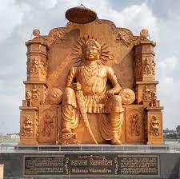
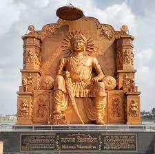

What is Vikram Samvat ?
The Hindu calendar, also called Panchanga, is one of various lunisolar calendars
that are traditionally used in the Indian subcontinent and Southeast Asia, with further regional
variations for social and Hindu religious purposes. They adopt a similar underlying concept for
timekeeping based on sidereal year for solar cycle and adjustment of lunar cycles in every
three years, but differ in their relative emphasis to moon cycle or the sun cycle and the names
of months and when they consider the New Year to start. Of the various regional calendars,
the most studied and known Hindu calendars are the Shalivahana Shaka (associated with the King
Shalivahana and basis for the Indian national calendar) found in the Deccan region of Southern
India and the Vikram Samvat (Bikrami) found in Nepal and the North and Central regions of
India - both of which emphasize the lunar cycle. Their new year starts in spring. In regions
such as Tamil Nadu and Kerala, the solar cycle is emphasized and this is called the Tamil
calendar (though Tamil Calendar uses month names like in Hindu Calendar) and Malayalam
calendar and these have origins in the second half of the 1st millennium CE. A Hindu
calendar is sometimes referred to as Panchangam, which is also known as Panjika
in Eastern India.
The ancient Hindu calendar conceptual design is also found in the Babylonian calendar, the Chinese calendar, and the Hebrew calendar, but different from the Gregorian calendar. Unlike the Gregorian calendar which adds additional days to the month to adjust for the mismatch between twelve lunar cycles (354 lunar days) and approximately 365 solar days, the Hindu calendar maintains the integrity of the lunar month, but inserts an extra full month, once every 32–33 months, to ensure that the festivals and crop-related rituals fall in the appropriate season.
 The Hindu calendars have been in use in the Indian subcontinent since Vedic times, and remain in use by the Hindus all over the world, particularly to set Hindu festival dates. Early Buddhist communities of India adopted the ancient Vedic calendar, later Vikrami calendar and then local Buddhist calendars. Buddhist festivals continue to be scheduled according to a lunar system. The Buddhist calendar and the traditional lunisolar calendars of Cambodia, Laos, Myanmar, Sri Lanka and Thailand are also based on an older version of the Hindu calendar. Similarly, the ancient Jain traditions in their calendar have followed the same lunisolar system as the Hindu calendar for festivals, texts and inscriptions. However, the Buddhist and Jain timekeeping systems have attempted to use the Buddha and the Mahavira's lifetimes as their reference points.
The Hindu calendar is also important to the practice of Hindu astrology and zodiac system. It is also employed for observing the auspicious days of deities and occasions of fasting, such as Ekadashi
Jai shree Ram!
The ancient Hindu calendar conceptual design is also found in the Babylonian calendar, the Chinese calendar, and the Hebrew calendar, but different from the Gregorian calendar. Unlike the Gregorian calendar which adds additional days to the month to adjust for the mismatch between twelve lunar cycles (354 lunar days) and approximately 365 solar days, the Hindu calendar maintains the integrity of the lunar month, but inserts an extra full month, once every 32–33 months, to ensure that the festivals and crop-related rituals fall in the appropriate season.
 The Hindu calendars have been in use in the Indian subcontinent since Vedic times, and remain in use by the Hindus all over the world, particularly to set Hindu festival dates. Early Buddhist communities of India adopted the ancient Vedic calendar, later Vikrami calendar and then local Buddhist calendars. Buddhist festivals continue to be scheduled according to a lunar system. The Buddhist calendar and the traditional lunisolar calendars of Cambodia, Laos, Myanmar, Sri Lanka and Thailand are also based on an older version of the Hindu calendar. Similarly, the ancient Jain traditions in their calendar have followed the same lunisolar system as the Hindu calendar for festivals, texts and inscriptions. However, the Buddhist and Jain timekeeping systems have attempted to use the Buddha and the Mahavira's lifetimes as their reference points.
The Hindu calendar is also important to the practice of Hindu astrology and zodiac system. It is also employed for observing the auspicious days of deities and occasions of fasting, such as Ekadashi
Jai shree Ram!
Origin
The Vedic culture developed a sophisticated time keeping methodology and calendars for Vedic
rituals, and timekeeping as well as the nature of solar and Moon movements are mentioned in
Vedic texts. For example, Kaushitaki Brahmana chapter 19.3 mentions the shift in the relative
location of the Sun towards north for 6 months, and south for 6 months.
Time keeping was important to Vedic rituals, and Jyotisha was the Vedic era field of tracking and predicting the movements of astronomical bodies in order to keep time, in order to fix the day and time of these rituals. This study is one of the six ancient Vedangas, or ancillary science connected with the Vedas.
Yukio Ohashi states that this Vedanga field developed from actual astronomical studies in ancient Vedic Period. The texts of Vedic Jyotisha sciences were translated into the Chinese language in the 2nd and 3rd centuries CE, and the Rigvedic passages on astronomy are found in the works of Zhu Jiangyan and Zhi Qian. According to Subhash Kak, the beginning of the Hindu calendar was much earlier. He cites Greek historians describing Maurya kings referring to a calendar which originated in 6676 BCE known as Saptarsi calendar.
The Vikram calendar is named after king Vikramaditya and starts in 57 BCE.
Time keeping was important to Vedic rituals, and Jyotisha was the Vedic era field of tracking and predicting the movements of astronomical bodies in order to keep time, in order to fix the day and time of these rituals. This study is one of the six ancient Vedangas, or ancillary science connected with the Vedas.
Yukio Ohashi states that this Vedanga field developed from actual astronomical studies in ancient Vedic Period. The texts of Vedic Jyotisha sciences were translated into the Chinese language in the 2nd and 3rd centuries CE, and the Rigvedic passages on astronomy are found in the works of Zhu Jiangyan and Zhi Qian. According to Subhash Kak, the beginning of the Hindu calendar was much earlier. He cites Greek historians describing Maurya kings referring to a calendar which originated in 6676 BCE known as Saptarsi calendar.
The Vikram calendar is named after king Vikramaditya and starts in 57 BCE.